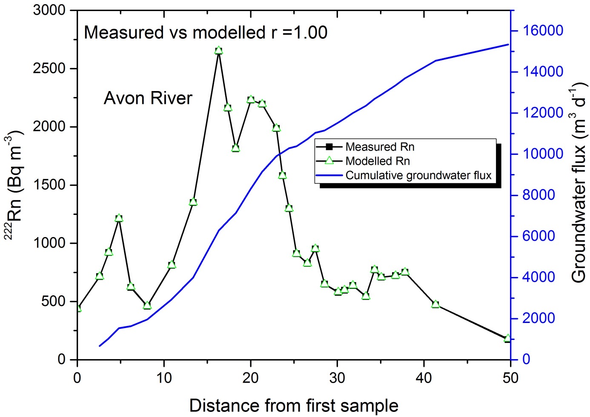
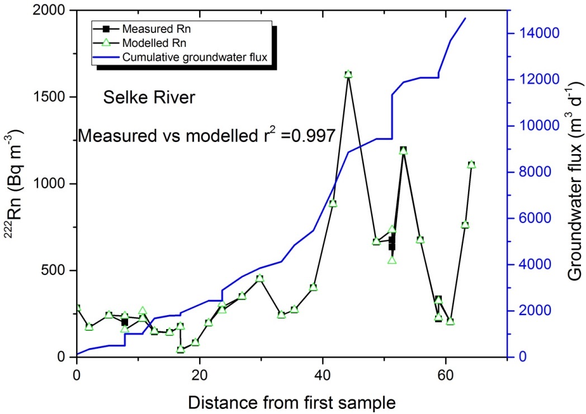

1About FINIFLUX
FINIFLUX is an implicit finite element model that solves the steady-state mass balance of radon-222 (²²²Rn) along streams and rivers. From measured radon activities it estimates, reach by reach, how much groundwater flows into the river and how strongly the river exchanges water with its hyporheic zone.
Groundwater is strongly enriched in radon compared with river water. Along a stream, radon is lost by degassing to the atmosphere and by radioactive decay, and it is replenished wherever groundwater or hyporheic water enters. The radon profile measured along the river therefore records where and how much groundwater enters. FINIFLUX closes this mass balance for every reach and inverts the measured profile into a spatially resolved estimate of groundwater inflow.
FINIFLUX is open source and freely available. The theory, numerical implementation and residence-time models are described in Frei & Gilfedder (2015) and Frei et al. (2019).
What is new in the Python edition
The original FINIFLUX (versions 2.x) is a compiled MATLAB program coupled to the optimiser BEOPEST (Doherty, 2010). The Python edition keeps the same physics and the same input file, but rebuilds the model so that it can calibrate itself.
| Topic | MATLAB version 2.x | Python edition |
|---|---|---|
| Platform | Windows, compiled MATLAB 2015b plus the MATLAB Runtime (about 700 MB) | Any system with Python 3, NumPy and PyTorch or TensorFlow |
| Parameter estimation | External optimiser BEOPEST with a master and several slave processes | Built in. The model is differentiable, so gradients come from automatic differentiation (Adam, then L-BFGS) |
| Running a model | pre_pest.exe, then Beopest64 master and slaves in separate command windows | One command: python run_FINIFLUX.py |
| Stabilising the fit | Tikhonov regularisation with addreg1.exe | Log-space parameters, a misfit normalised by the detection limit, and an optional smoothness penalty |
| Uncertainty | Sensitivities in finiflux.sen | Posterior credible intervals per reach, an identifiability report, and a groundwater-endmember uncertainty band |
| Hyporheic depth | Always estimated | Estimated, or calculated from bedform heights |
| Results and figures | Spread over the run and slave folders; plots with pest_tracker.exe | One results/ folder with data files and a five-panel figure, including the water-balance check |
| Input file | FINIFLUX.xlsx, same layout for both. The Python edition reads it by label, ignores the run path and CPU cells, and adds optional extras (column U, detection limit). | |
2Workflow and web tools
A FINIFLUX study runs from survey planning to checking the results. Free browser tools on this website support several of the steps. They run entirely in the browser and send no data anywhere.
- Plan the survey
Choose sampling points close enough together that the radon signal of inflowing groundwater is not lost by degassing before the next point.
Sampling length → - Measure in the field
Radon at every sampling point, discharge, mean width and depth of each reach, the radon activity of groundwater (the endmember) and, ideally, its spread. Measure tributaries above their confluence.
- Estimate degassing
If you use your own gas transfer velocities (degassing model 3), estimate k per reach from empirical models, and calculate k across weirs and waterfalls from radon measured before and after them.
Degassing models by reach →Weir and waterfall degassing → - Handle tributaries
Add a short inflow reach at each confluence and calculate the radon activity just below it with the mixing model.
Confluence mixing → - Build the input file
Enter options, sampling points and reaches, check them on the network diagram and profile plot, and download
FINIFLUX.xlsx.
Input builder → - Run FINIFLUX
python run_FINIFLUX.pyestimates groundwater inflow, hyporheic depth and residence time for every reach (section 7). - Check the results
Compare modelled and measured radon, the cumulative groundwater inflow against the discharge gain, and the credible intervals (section 11).
3Installation
Download FINIFLUX for Python (.zip)
The download contains run_FINIFLUX.py, the PyTorch and TensorFlow packages, the README and an example input file (FINIFLUX.xlsx, the Schaefer et al. dataset). Unzip it and install the requirements:
It needs Python 3 with NumPy, openpyxl and matplotlib, plus one tensor library:
# PyTorch backend
pip install torch numpy openpyxl matplotlib
# or TensorFlow backend (use a wheel that matches your processor, e.g. arm64 on Apple Silicon)
pip install tensorflow numpy openpyxl matplotlibNo further installation is needed. Keep the folder structure as it is: run_FINIFLUX.py in the main folder, next to finiflux_pytorch/ and finiflux_tensorflow/. The launcher adds the selected package to Python's search path itself.
4Model concept
Governing equation
For each reach, FINIFLUX solves the steady-state radon mass balance:
| Symbol | Meaning | Unit |
|---|---|---|
| C | Radon activity in the river | Bq/m³ |
| Q | River discharge | m³/s |
| I | Groundwater inflow per metre of river (estimated) | m³/(m·s) |
| c_gw | Radon activity of groundwater (endmember) | Bq/m³ |
| α₁, α₂ | Radon production and loss by hyporheic exchange | Bq/(m·s), m²/s |
| k | Gas transfer (degassing) velocity | m/s |
| w, d | Mean width and depth of the reach | m |
| λ | ²²²Rn decay constant, 0.18 d⁻¹ = 0.18/86 400 s⁻¹ | s⁻¹ |
| Q_in, L, c_in | Tributary discharge, inflow length and radon activity (0 if none) | m³/s, m, Bq/m³ |
The node–element concept
FINIFLUX discretises the river into one-dimensional finite elements. Each node is a sampling location with a measured radon activity. Each element is the reach between two neighbouring nodes and carries the reach properties: length, depth, width, discharge, groundwater endmember and so on. A river with N sampling points therefore has N − 1 reaches. The modelled radon at every node is compared directly with the measurement there.
Degassing
Option C8 selects how the gas transfer velocity k is obtained. With v = Q/(w·d) in m/d:
- 1, O'Connor & Dobbins (1958):
k = 9.301·10⁻³ · v^0.5 / d^1.5 · d(m/d). - 2, Negulescu & Rojanski (1969):
k = 4.87·10⁻⁴ · (v/d)^0.85 · d(m/d). - 3, user-defined: one value per reach in column T, in m/s. Use this for measured values, for other empirical models, and for reaches with weirs or waterfalls, where turbulent degassing is far stronger than the empirical models predict.
Hyporheic exchange and residence-time distributions
River water that flows through the streambed (the hyporheic zone) picks up radon produced in the sediment and loses some by decay. FINIFLUX describes this with a production term α₁ and a loss term α₂. They depend on the hyporheic depth h, porosity, width, the mean residence time th and the residence-time distribution (RTD), chosen with option C17:
- 1, exponential: closed form,
α₁ = γ·h·w·por/(1+λ·t_h)andα₂ = λ·h·w·por/(1+λ·t_h)with γ = cgw·λ. The fastest option. - 2, truncated power law: from a convolution of the RTD with radon in-growth and decay (Frei et al., 2019).
- 3, gamma: closed-form Laplace transform
(1+λ·t_h/α)^−α. The shape parameter α (C22) changes the distribution: α = 1 equals the exponential model, α = 2 gives a distribution with a peak, α = 0.5 a long tail.
Including hyporheic exchange (C13 = 1) is recommended; it often improves the fit.
Numerical scheme
FINIFLUX uses linear finite elements. For each element it assembles a reaction matrix, an advection matrix, a Petrov–Galerkin upwind correction weighted by β (option C24) and a load vector. The upstream boundary condition fixes the radon at the first node to its measured value. The resulting linear system is solved directly. In the Python edition every step is a differentiable tensor operation, so gradients pass through the solve.
5Preparing the input file
All settings and data live in a single sheet of FINIFLUX.xlsx, in three blocks: options in columns B and C, nodes in F and G, and elements in I to U. The data rows start in row 4.
Options (columns B and C)
| Cell | Setting | Values | Used by |
|---|---|---|---|
| C4 | Run directory for the simulation | A folder path, e.g. D:\FINIFLUX\run1. Avoid spaces and special characters. | MATLAB |
| C6 | Number of CPU cores. BEOPEST uses one as master and the rest as slaves; three slaves are usually enough. | Whole number ≥ 2 | MATLAB |
| C8 | Degassing model | 1 O'Connor & Dobbins · 2 Negulescu & Rojanski · 3 user values (column T) | Both |
| C13 | Hyporheic exchange | 1 on (recommended) · 0 off | Both |
| C17 | Residence-time distribution | 1 exponential · 2 truncated power law · 3 gamma | Both |
| C22 | Shape α of the gamma distribution (only for C17 = 3) | > 0, e.g. 0.5, 1 or 2 | Both |
| C24 | Upstream weighting β of the advection term | 0 off · 0 < β < 1 partial · 1 full. Recommended: 0.5 | Both |
| C28 | Radon detection limit, labelled "Radon Detection Limit" (optional) | Bq/m³, default 2.5. Weights the misfit and sets the default noise level. | Python |
Nodes (columns F and G)
| Column | Content | Unit |
|---|---|---|
| F | Location of each sampling point along the river, strictly increasing downstream | m |
| G | Measured radon activity at that point. The first value is also the upstream boundary condition. | Bq/m³ |
The list can be as long as needed; it ends at the first empty cell in column F.
Elements (columns I to U)
One row per reach, starting in row 4. Reach i runs from node i to node i + 1, so this block has one row fewer than the node block.
| Column | Content | Unit | Notes |
|---|---|---|---|
| I | Reach number | – | 1, 2, 3 … The last number is the number of nodes minus one. |
| J | Reach length | m | Distance between the two nodes, usually =F5-F4. |
| K | Mean river depth | m | |
| L | Mean river width | m | |
| M | Radon activity of inflowing groundwater (endmember) | Bq/m³ | Often the largest source of uncertainty; see column U. |
| N | Hyporheic depth (initial guess) | m | Only with C13 = 1. In bedform mode (Python) this column holds the bedform height instead. |
| O | Porosity of the streambed | – | Only with C13 = 1. |
| P | Tributary / surface inflow discharge | m³/s | 0 for normal reaches. See section 6. |
| Q | Inflow length | m | Must equal the reach length in J. 0 for normal reaches. |
| R | Radon activity of the inflow | Bq/m³ | 0 for normal reaches. |
| S | Mean river discharge of the reach | m³/s | |
| T | User-defined gas transfer velocity | m/s | Only with C8 = 3; otherwise 0. Divide m/d by 86 400. |
| U | Standard deviation of the groundwater endmember (optional) | Bq/m³ | Python Enables the endmember uncertainty analysis (9.2). |
6Tributaries and surface inflow
FINIFLUX can include tributaries and other surface inflows, such as drains or wastewater treatment plant outflows, and accounts for their effect on the radon in the river. Each inflow is represented by a short extra element.
Step 1 · Add two nodes at the confluence
Place one new node where the tributary enters the river and a second one just downstream, where its influence ends. The distance between the two nodes equals the width of the tributary at the inflow (often 1 to 10 m). The element between them is the inflow element.
Step 2 · Assign radon to the new nodes
Radon is usually measured in the river above the confluence and in the tributary itself. The upstream measurement goes to the first new node (node 3, for example 820 Bq/m³). The radon just below the confluence is calculated with a linear mixing model and goes to the second new node (node 4, for example 830 Bq/m³):
Cbefore and Cafter are the radon activities above and below the confluence, Q the river discharge, and Qin and cin the discharge and radon of the tributary. Confluence mixing →
Step 3 · Fill in the inflow element
- Column P: tributary discharge Qin.
- Column Q: inflow length, identical to the reach length in column J (10 m in the example).
- Column R: tributary radon cin.
- All other columns as for a normal reach. For every other reach, P, Q and R are 0.
In the input builder, set the reach type to "Tributary". It highlights the three inflow fields and sets the next point's location to the previous location plus the inflow length, so the two lengths always match.
7Running FINIFLUX
run_FINIFLUX.py is the only file you run. It finds the input file, loads the selected backend, runs the model, writes the results and draws the figures.
python run_FINIFLUX.py # estimate parameters with the defaults
python run_FINIFLUX.py --backend pytorch # choose the PyTorch backend
python run_FINIFLUX.py --mode forward # one forward run, no fitting
python run_FINIFLUX.py --input selke.xlsx --out selke_run --show
python run_FINIFLUX.py --rn-sigma-rel 0.1 # 10 % measurement uncertainty on radon
python run_FINIFLUX.py --bedform-depth # calculate h from bedform heights (column N)
python run_FINIFLUX.py --adam 500 --lbfgs 150 # more optimisation iterationsThe defaults are set in the CONFIG dictionary at the top of run_FINIFLUX.py; edit them there if you always use the same settings. Every entry has a matching command-line flag. The table lists the values in the launcher at the time of writing.
| Flag | Default | Meaning |
|---|---|---|
| --input | FINIFLUX.xlsx | Input file, relative to the script |
| --backend | tensorflow | pytorch or tensorflow |
| --mode | invert | invert estimates parameters, forward runs the model once with the values in the file |
| --out | results | Output folder |
| --plot | <out>/finiflux_plots.png | Path of the main figure |
| --show | on | Also open the figure window |
| --adam | 300 | Adam warm-up steps (both backends) |
| --lbfgs | 0 | L-BFGS iterations after Adam (PyTorch only) |
| --iter / --lr | 300 / 0.05 | Adam iterations and learning rate (TensorFlow) |
| --smooth | 0.001 | Weight of the smoothness penalty between neighbouring reaches |
| --quiet | off | Hide the progress of each iteration |
| --bedform-depth | off | Calculate hyporheic depth from bedform heights (8.3) |
| --uncertainty | on | Estimate posterior uncertainty after the fit; --no-uncertainty skips it |
| --unc-method | gauss_newton | gauss_newton (robust) or full Hessian |
| --rn-sigma-abs / --rn-sigma-rel | – / 0.1 | Known radon measurement uncertainty, absolute (Bq/m³) or relative |
| --endmember | on | Groundwater-endmember uncertainty analysis (needs column U) |
| --em-p-low / --em-p-high | 0.05 / 0.95 | Percentiles of the endmember distribution used for the re-fits |
Using FINIFLUX as a library
Each package can also be run directly, or imported in your own scripts and notebooks:
python -m finiflux_torch.cli invert FINIFLUX.xlsx
python -m finiflux_tf.cli invert FINIFLUX.xlsxfrom finiflux_torch import read_input, fit, write_results, plot_all, estimate_uncertainty
data = read_input("FINIFLUX.xlsx")
result = fit(data)
write_results(result, "results/")
unc = estimate_uncertainty(data, result)8Parameter estimation
In invert mode FINIFLUX estimates three parameters for every reach: groundwater inflow I, hyporheic depth h and mean hyporheic residence time th. Because the whole model is differentiable, the gradient of the misfit with respect to all parameters is available at once, and the optimiser uses it directly. This replaces the BEOPEST calibration of the MATLAB version.
Objective and regularisation
- Parameters are optimised as logarithms. This keeps them positive and puts parameters of very different size on a common scale.
- Data misfit:
Σ w_j·(C_j − Rn_obs,j)²over all nodes, with weightsw_j = 1/max(Rn_obs,j, detection limit)². Small and large activities therefore count comparably, and values near the detection limit are not over-weighted. - Smoothness penalty (
--smooth, default 0.001): discourages large jumps between neighbouring reaches. - Prior anchor (off by default): an optional pull toward the initial values, similar to the Tikhonov regularisation of the MATLAB version.
Bounds and optimiser
- I between 10⁻¹⁰ and 10⁻² m³/(m·s), h between 0.001 and 1 m, th between 60 s and 12 h. The bounds are enforced in every iteration.
- Initial values: h from column N (0.5 m in the template), th 6 h, I a small default.
- PyTorch: Adam warm-up, optionally followed by L-BFGS. TensorFlow: Adam.
Hyporheic depth from bedforms
With --bedform-depth, h is calculated instead of estimated, from the bedform height H in column N, using the dynamic-head relation of Elliott & Brooks (1997, after Fehlman, 1985):
The inversion then fits only I and th. This reduces the trade-off between the hyporheic parameters.
9Uncertainty analysis
9.1 Parameter uncertainty
After the fit, FINIFLUX approximates the posterior distribution of the parameters around the best estimate (a Laplace approximation). The default gauss_newton method builds the curvature from the model's sensitivities and is always stable; full uses the exact second derivatives.
- Noise level: by default the misfit weighting (the larger of the observation and the detection limit). If you know your measurement uncertainty, pass it with
--rn-sigma-absor--rn-sigma-rel; it also draws a ±σ band around the observations. - Results per reach: best estimate, standard deviation and 95 % credible interval for I, h and th, written to
uncertainty.csvand drawn as bands in the figure. - Identifiability report: radon alone often cannot separate groundwater inflow from hyporheic exchange. The report lists the eigenvalues of the curvature matrix; near-zero values reveal parameter combinations the data cannot constrain.
9.2 Groundwater endmember uncertainty
The radon activity of groundwater is usually the largest single source of error in radon-based inflow estimates: a higher endmember means less inflow is needed to explain the same river radon. If column U holds the endmember standard deviation, FINIFLUX treats each endmember as a normal distribution and repeats the fit with its low and high percentiles (5 % and 95 % by default). The resulting range of I and of cumulative inflow is drawn in a second figure and written to endmember_uncertainty.csv.
10Outputs
All results are written to the output folder (results/ by default):
| File | Content | Unit |
|---|---|---|
| gw_inflow.dat | Groundwater inflow I per reach | m³/(m·s) |
| depth_hz.dat | Hyporheic depth h per reach (calculated in bedform mode) | m |
| rtimes_hz.dat | Mean hyporheic residence time th per reach | s |
| Rn_modeled.csv | Location and modelled radon at every node | m, Bq/m³ |
| finiflux_plots.png | Main figure, five panels (below) | |
| uncertainty.csv | Per reach and parameter: best estimate, standard deviation, credible interval | |
| endmember_uncertainty.csv | Endmember percentiles, the re-fitted inflows and the resulting range | |
| finiflux_plots_endmember.png | Second figure with the endmember uncertainty |
The main figure stacks five panels along the river:
- Modelled against measured radon, with correlation and RMSE, and a ±σ band when a measurement uncertainty is given.
- Groundwater inflow I with its credible-interval band.
- Hyporheic depth h with its band.
- Residence time th with its band.
- Cumulative groundwater inflow compared with the observed increase in discharge: the water-balance check of section 11, with a credible band.
The y-axes of panels 2 to 5 follow the best estimates, so a very wide interval cannot flatten the curve; exact interval limits are in uncertainty.csv.
11Checking plausibility
A good fit to the radon data does not by itself mean the inflows are realistic. Always compare the estimated groundwater inflow with a simple water balance of the river. The increase in discharge between the first and last sampling point should be explained by groundwater and surface inflows:
The total groundwater inflow is the sum over all reaches of the inflow per metre times the reach length:
Accumulating Ii·Δxi from the first reach downstream and comparing it with the discharge difference at each sampling point shows where groundwater enters and how the two water-balance terms develop along the river. The Python edition draws exactly this comparison in panel 5 of the main figure; in the MATLAB version it had to be done by hand in a spreadsheet.
Interpreting the comparison
- GW < ΔQ is the usual result in gaining rivers: unmonitored, diffuse surface inflows also add water.
- GW > ΔQ can be plausible in rivers that lose water to the aquifer in some reaches, or where water flows through gravel banks and meanders (parafluvial flow) and re-enters with a groundwater-like radon signal. FINIFLUX cannot separate this flow and counts it as groundwater.
Example, Avon River: ΔQ = 0.291 − 0.145 = 0.146 m³/s with no tributaries, but GW = 0.738 m³/s. The Avon has losing reaches and substantial parafluvial flow, which explains the difference (Cartwright & Hofmann, 2016).
12If the fit is poor
- The optimiser has not converged. Increase
--adam(and, with PyTorch,--lbfgs), or lower the learning rate--lrif the misfit jumps between iterations. - Reach-to-reach values are noisy. Increase
--smoothstep by step (e.g. 0.01, 0.1) and check that the radon fit stays acceptable. - Strong mismatch at specific points. Check degassing first: weirs, waterfalls and riffles degas far more than the empirical models assume. Use measured or weir-derived k (C8 = 3) for those reaches.
- Mismatch below confluences. Check the inflow elements: inflow length equal to reach length, correct tributary discharge and radon, and a mixed radon value at the node below.
- Parameters at their bounds or very wide intervals. Read the identifiability report. If h and th trade off against I, try
--bedform-depth, switch hyporheic exchange off as a test, or add independent information. - Inflows that seem too large or small overall. Revisit the groundwater endmember and run the endmember analysis (column U).
- TensorFlow fails to import. Install a wheel that matches your processor, or use
--backend pytorch.
13Example datasets
Avon River, Australia (simple case)
Radon data from Cartwright & Hofmann (2016). The Avon River in the Gippsland Basin, Victoria, drains Mt. Wellington (664 m a.s.l.) and runs 122 km to Lake Wellington. About 30 % of the catchment lies in mountainous headwaters and 70 % in lowland plains, where the river has formed a wide gravel channel with riffle–pool sequences. The example uses 50 km of the middle and lower river. In the dry Australian climate there are no tributaries, and the river is a single channel fed only by groundwater, as close as it gets to an ideal two-box system. The coarse bed allows some hyporheic exchange.
The input contains only the basic data: no tributaries and no user degassing values. Reach lengths range from 700 m to 8 km and radon from 170 to 2000 Bq/m³, with a pronounced hot spot in the middle reaches. The groundwater endmember is held constant at 20 000 Bq/m³, and hyporheic exchange is switched on with a power-law RTD. Because the empirical degassing models were developed for rivers like this, the fit is excellent. The water balance is somewhat overestimated, because parafluvial flow through gravel banks and meanders, with residence times above 21 days, appears as groundwater.

Selke River, Germany (complex case)
The Selke drains the Harz Mountains in central Germany and flows north to join the Bode. It starts in mountainous headwaters, crosses an upland plateau and then runs through gravel-bed lowlands with intensive agriculture. It has many tributaries, of which the largest were measured. Differential gauging shows that the lower river both loses and gains water: water leaves the channel in some reaches and rejoins it a few kilometres downstream. A waterfall in the middle reaches complicates degassing further.
- Tributaries: five confluences are entered as 1 m inflow elements, recognisable in the node list as locations that increase by only 1 m. The node above each confluence has a measured radon activity; the node below has the mixed value from Eq. 1. Confluence mixing →
- Waterfall: the reach containing the waterfall is only 20 m long. Its radon loss was assumed to be due entirely to degassing, and k was calculated from it. Weir and waterfall degassing →
- Other reaches: k was calculated offline with the O'Connor & Dobbins model and entered as user values (C8 = 3). Measured degassing is always best but hard to obtain over long rivers; comparisons of conservative chloride and radon show that the empirical models perform well (Atkinson et al., 2013). Degassing models by reach →

The input files for both examples are included in the Examples folder of the FINIFLUX download. Open one in the input builder to see its network and profile.
AThe MATLAB / BEOPEST version
The original FINIFLUX 2.x remains available and uses the same input file. This appendix summarises how it is installed and run.
Downloads
- Trier University (recommended; MATLAB source and compiled executables): FINIFLUX 2.1 download
- University of Bayreuth (MATLAB source and compiled executables): hydro.uni-bayreuth.de
- GitHub (MATLAB source): github.com/saluisto/FINIFLUX
- Video tutorial: FINIFLUX on YouTube
Installation
- Without a MATLAB licence: on 64-bit Windows, run
Install_Finiflux.exewith an internet connection. It downloads the MATLAB Runtime (about 700 MB). If the installer cannot reach the MATLAB server, install the Runtime for MATLAB 2015b (version 9.0) manually from mathworks.com. - With a MATLAB licence: compile
finiflux.m,pre_pest.mand optionallypest_progress.mwith the Application Compiler app; the executables appear in thefor_testingfolder. - If
pre_pest.execannot copy files becausemsvcp110.dllis missing, install both the x64 and x86 Microsoft Visual C++ 2012 redistributables.
Running a calibration
- Create a run folder (short name, no spaces) and copy
Beopest64.exe,FINIFLUX.exe,FINIFLUX.xlsx,pre_pest.exe,write_pest.exe, optionallypest_tracker.exeand, for regularisation,addreg1.exeandadd.batinto it. - Open a command prompt in the run folder and run
pre_pest.exe. It creates the run files and the slave folders. Run it again after every change to the input file. - Find the computer name with
hostname, then start the master:Beopest64 finiflux /H :4004. - Open a command prompt in each slave folder and start the slave:
Beopest64 finiflux /H hostname:4004. Keep the computer from going to sleep. - Optionally follow progress with
pest_tracker.exe: modelled against measured radon, correlation per iteration, and inflow per reach.
If the optimisation fails or fits poorly, copy addreg1.exe and add.bat into the master and all slave folders, run pre_pest.exe, run add.bat in every folder to add Tikhonov regularisation, and then start master and slaves again.
Results
BEOPEST writes finiflux.rec (run record), finiflux.sen (parameter sensitivities) and finiflux.res (residuals) to the run folder. A final run with the best parameters, usually in slave1, writes gw_inflow.dat, depth_hz.dat, rtimes_hz.dat and Rn_modeled.csv with the same meaning as in the Python edition.
BReferences
- Atkinson, A.P., Cartwright, I., Gilfedder, B.S., Hofmann, H., Unland, N.P., Cendón, D.I. & Chisari, R. (2013). A multi-tracer approach to quantifying groundwater inflows to an upland river; assessing the influence of variable groundwater chemistry. Hydrological Processes. doi:10.1002/hyp.10122
- Cartwright, I. & Hofmann, H. (2016). Using radon to understand parafluvial flows and the changing locations of groundwater inflows in the Avon River, southeast Australia. Hydrology and Earth System Sciences, 20, 3581–3600. doi:10.5194/hess-20-3581-2016
- Doherty, J.E. (2010). Methodologies and Software for PEST-Based Model Predictive Uncertainty Analysis. Watermark Numerical Computing, Brisbane, Australia.
- Elliott, A.H. & Brooks, N.H. (1997). Transfer of nonsorbing solutes to a streambed with bed forms: Theory. Water Resources Research, 33(1), 123–136.
- Fehlman, H.M. (1985). Resistance components and velocity distributions of open channel flows over bedforms. MSc thesis, Colorado State University.
- Frei, S. & Gilfedder, B.S. (2015). FINIFLUX: An implicit finite element model for quantification of groundwater fluxes and hyporheic exchange in streams and rivers using radon. Water Resources Research, 51, 6776–6786. doi:10.1002/2015WR017212
- Frei, S., Durejka, S., Le Lay, H., Thomas, Z. & Gilfedder, B.S. (2019). Quantification of hyporheic nitrate removal at the reach scale: Exposure times versus residence times. Water Resources Research, 55(11), 9808–9825. doi:10.1029/2019WR025540
- Negulescu, M. & Rojanski, V. (1969). Recent research to determine reaeration coefficients. Water Research, 3, 189–202.
- O'Connor, D.J. & Dobbins, W.E. (1958). Mechanisms of reaeration in natural streams. Transactions of the American Society of Civil Engineers, 123(1), 641–666.
Published studies that applied FINIFLUX are listed on the FINIFLUX documentation page.